Fun with Filters and Frequencies
CS180 Project 2
1. Convolution
In this project, I explore the power of manipulating image frequencies to perform blurring, sharpening, hybridization, and blending. The foundation of these operations is convolution. The process of overlaying a kernel (matrix) over an image to extract specific features.
Here is an implementation of convolution in Python with a slower, per pixel approach, and a vectorized Numpy approach.
The four loop approach operates on each pixel, this is a very intuitive approach to the process but it ends up taking a long time, especially for large pictures or kernels. The vectorized NumPy approach operates on an entire vector at once.
Boundaries where a kernel would need to access parts of the image that don't exist are handled by padding the image with zeros on the border. It is padded by (height - 1) / 2 and (width - 1) / 2 on the top/bottom and the left/right respectively. Where height and width are the height and width of the kernel.

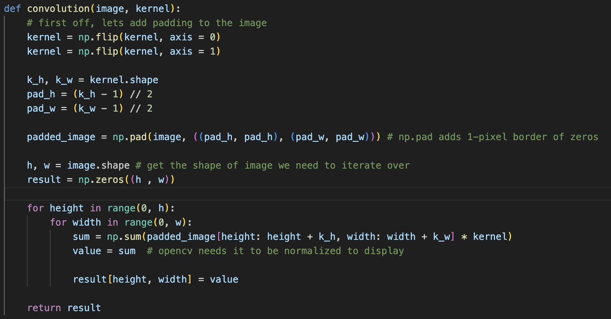
Finite Difference Operator
To detect edges, we can use the difference operators $D_x = [1, -1]$ and $D_y = [1, -1]^T$. When convolved with an image, these measure the rate of change (gradient) in the horizontal and vertical directions.
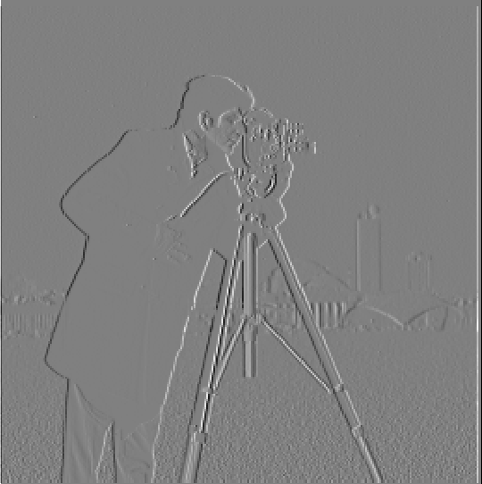

By calculating the gradient magnitude $\sqrt{D_x^2 + D_y^2}$, we can find the overall edges. However, the raw output is noisy. Below, I compare the raw magnitude against a binarized version (thresholding the values) to create a clean edge map.

2. Derivative of Gaussian (DoG) Filter
The previous results were noisy because high frequencies (noise) act like edges. To fix this, we can apply a Gaussian Blur before edge detection.
Because convolution is associative, we can save a step: instead of convolving the image with the Gaussian ($G$) and then the difference operator ($D$), we can convolve the Gaussian with the operator first to create a Derivative of Gaussian (DoG) filter. $$ \frac{d}{dx}(f * G) = f * \frac{d}{dx}G $$
The result is significantly smoother, with fewer artifacts in the background.
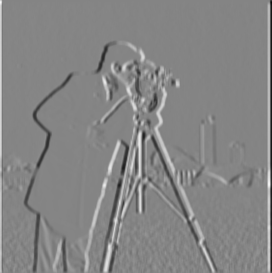


3. Image Sharpening
We can utilize the "Unsharp Masking" technique to sharpen images. The logic is simple: we extract the high frequencies (details) by subtracting the low frequencies (blurred image) from the original.
Below, compare the original Taj Mahal with the sharpened version. Notice how the engravings and poles become distinct.


Sharpening a Blurry Photo
I attempted to sharpen a low-light, blurry photo of myself at UC Berkeley. While sharpening cannot "create" data that was lost to blur, it significantly enhances the perception of edges (glasses, leaves on the ground).
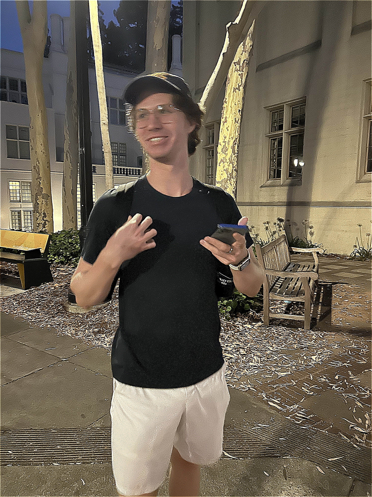

4. Hybrid Images
Hybrid images are static images that change interpretation as a function of viewing distance. The high-frequency component (visible up close) is combined with a low-frequency component (visible from afar).
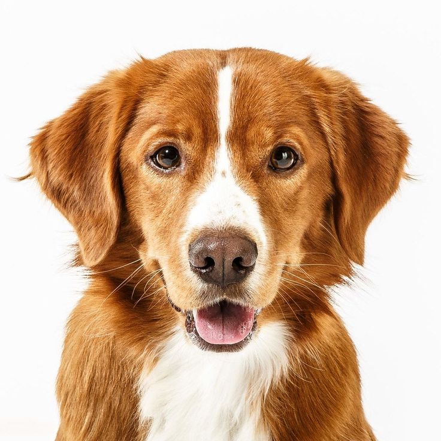
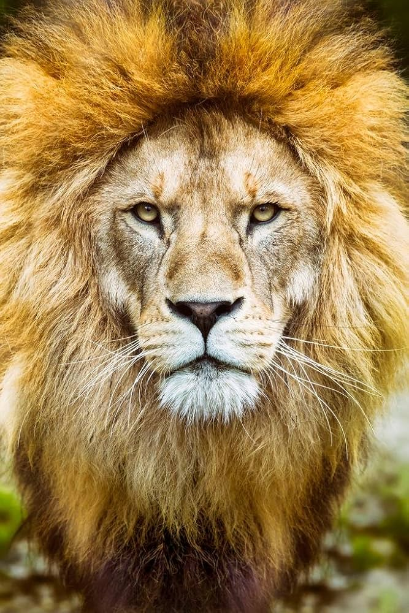
Frequency Analysis (FFT)
Using Fourier Transforms, we can visualize how the frequency content changes. The Dog (Low Pass) concentrates energy in the center, while the Lion (High Pass) retains the spread of outer frequencies.
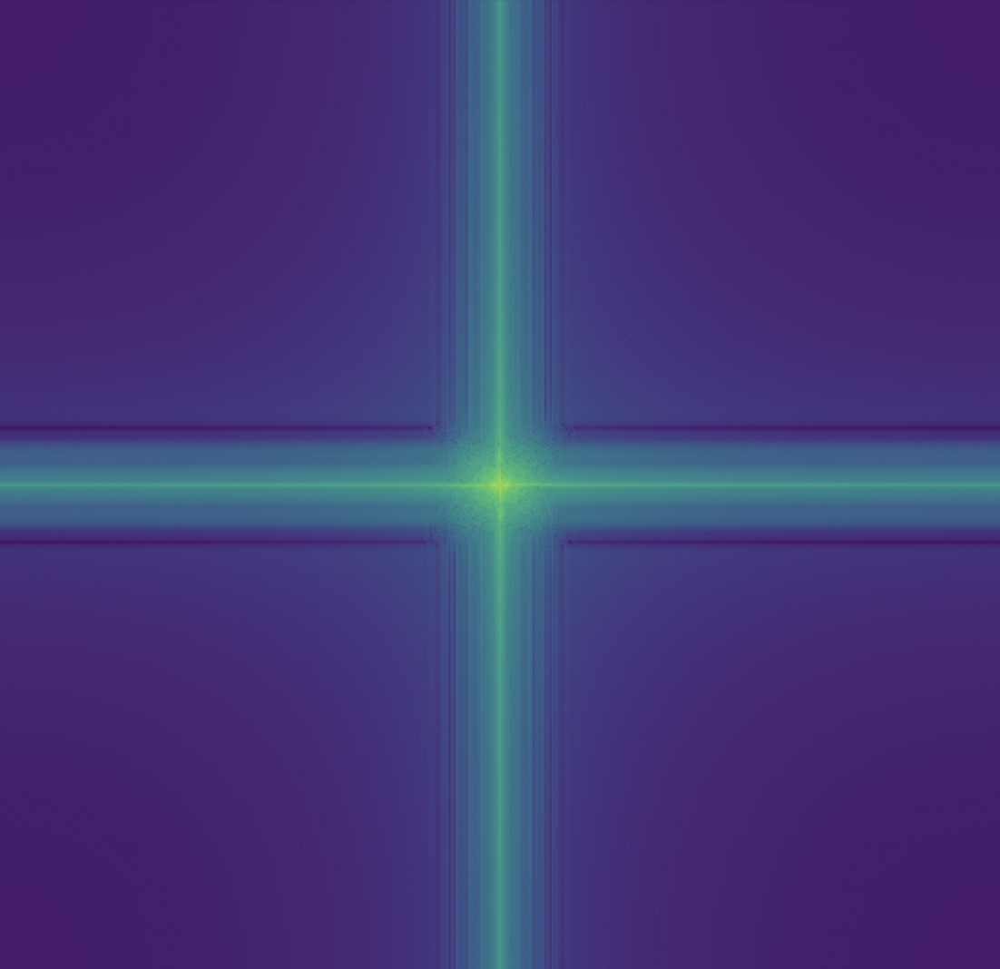
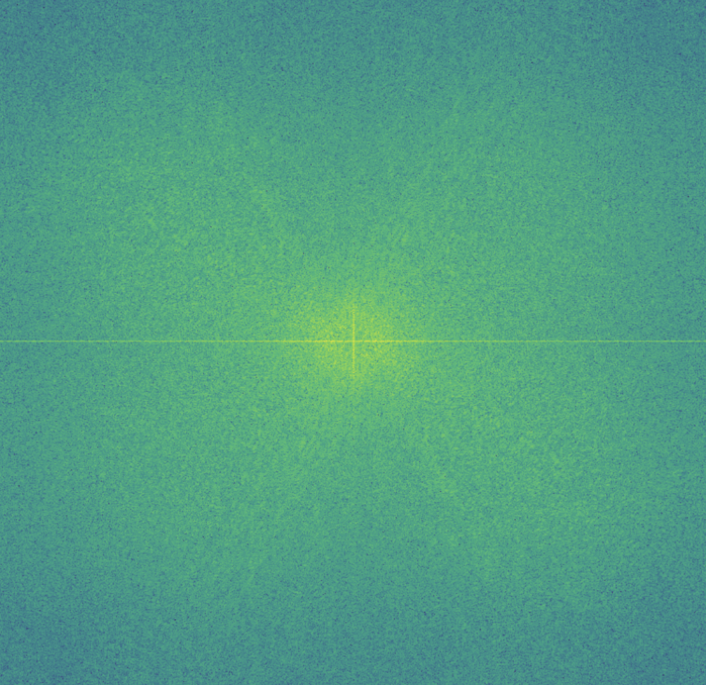
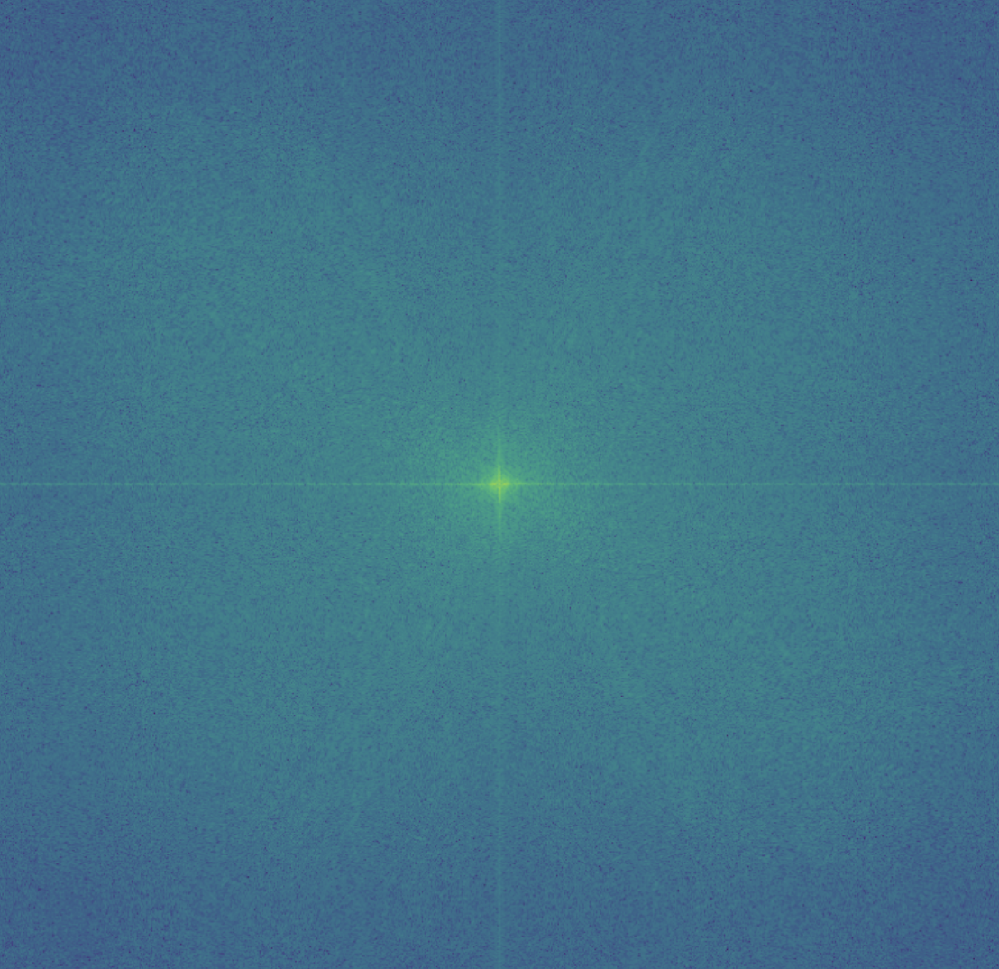

Other Hybrid Examples
Nutmeg the Cat (Low Pass) + Derek (High Pass), and The Kiss (Low Pass) + The Lovers (High Pass).
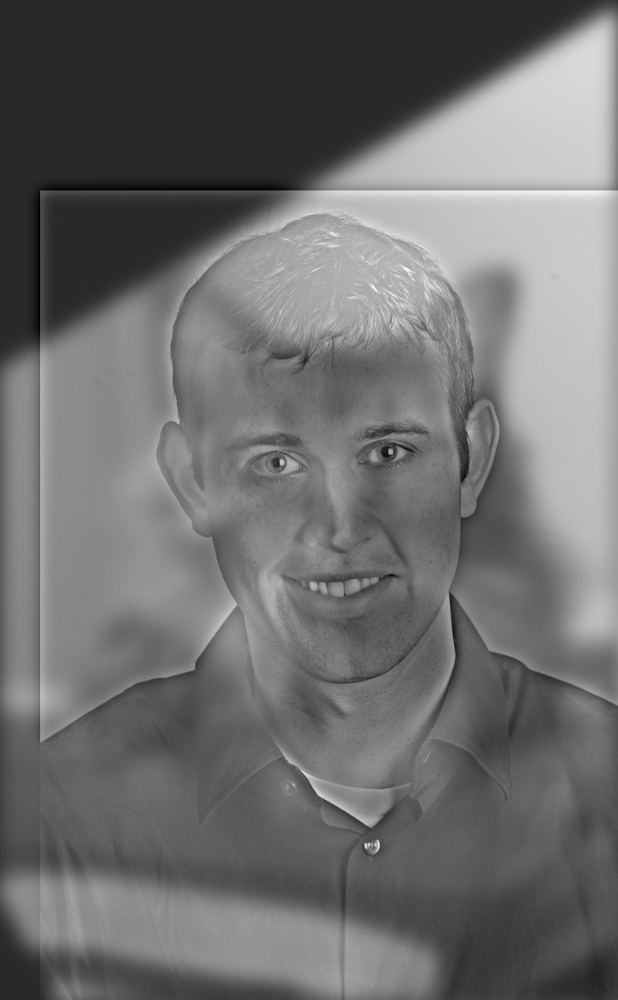
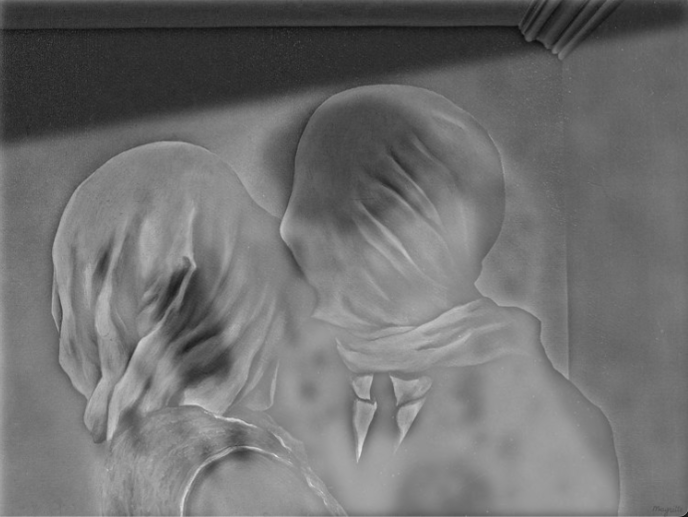
5. Multiresolution Blending
Using Gaussian and Laplacian stacks, we can blend two images seamlessly. Instead of a hard cut, we blend the images at different frequency bands separately.
The "Oraple" (Orange + Apple) is the classic example. Below, compare a naive cut-and-paste vs. the multiresolution blend.

The Blending Stack
Below is the visualization of the Apple and Orange at different Laplacian levels (frequencies), and how they are combined at each step.


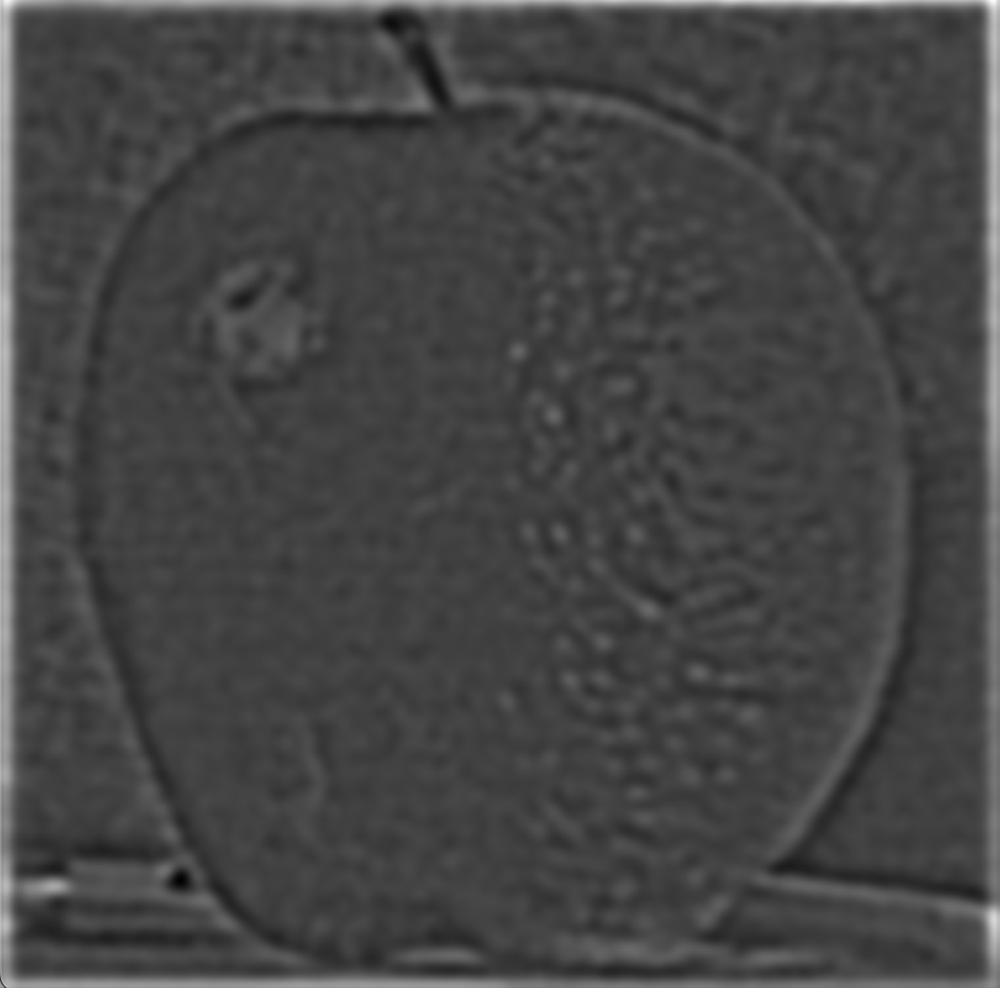


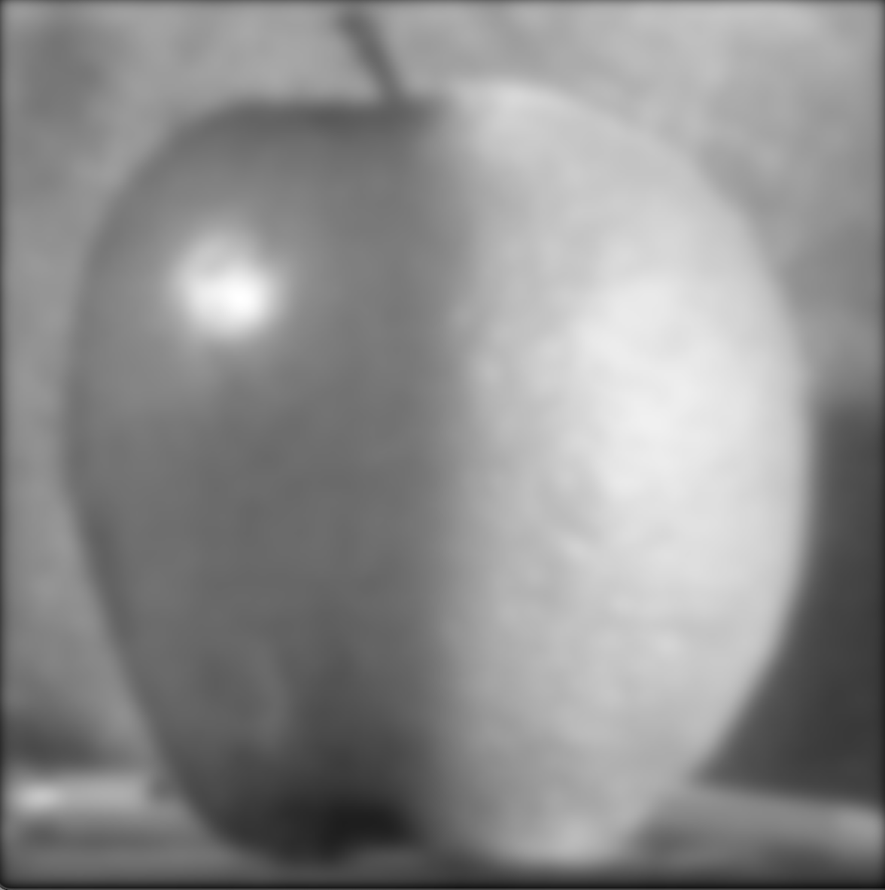
Robot Meets Art
A custom blend utilizing an irregular mask to fuse a robotic hand into "The Creation of Adam".
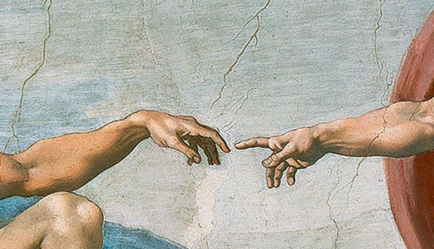